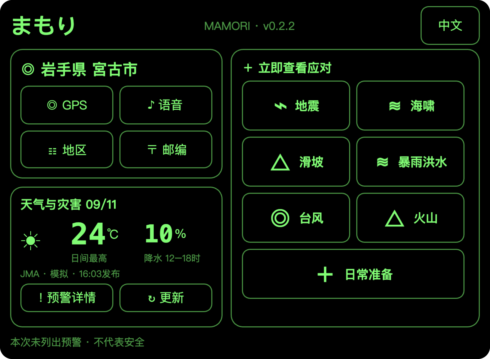
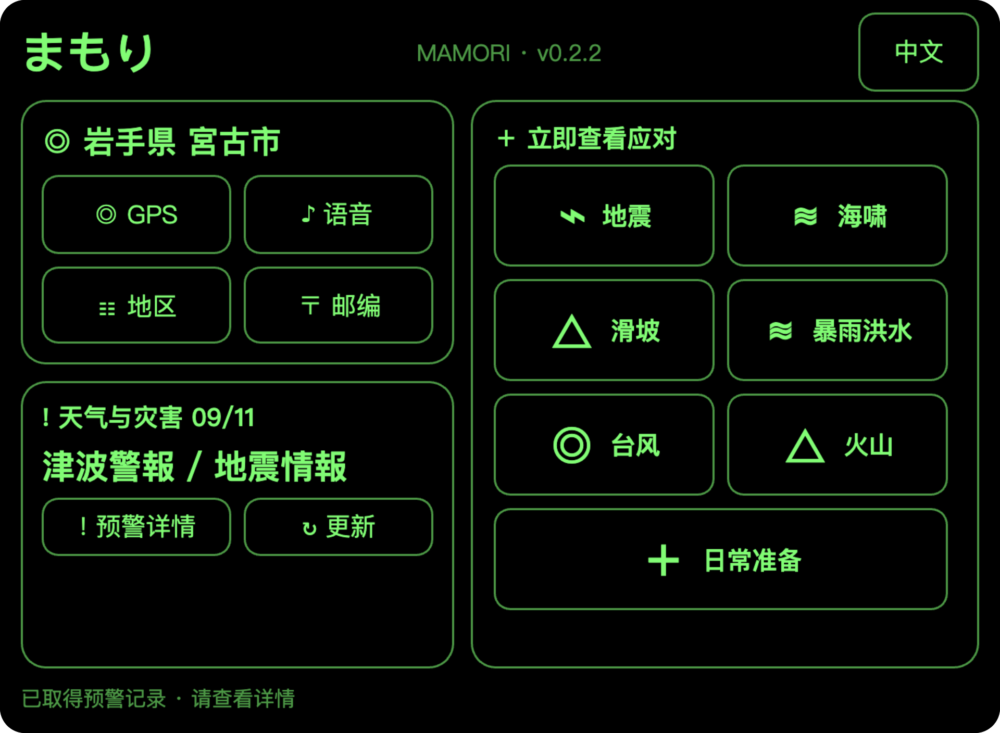
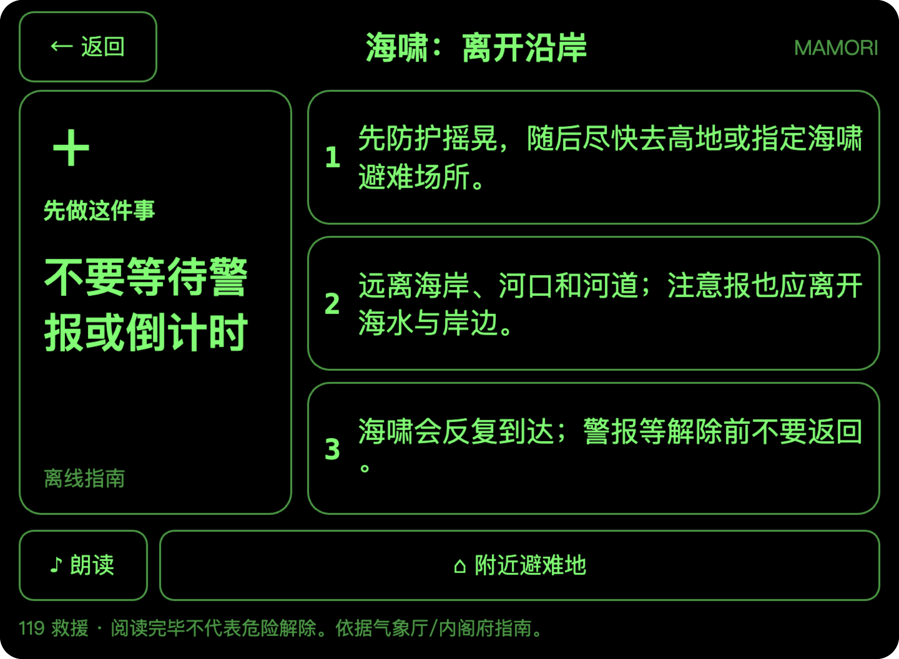
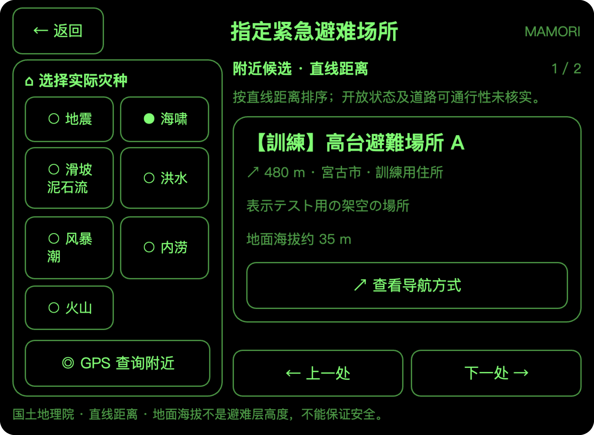
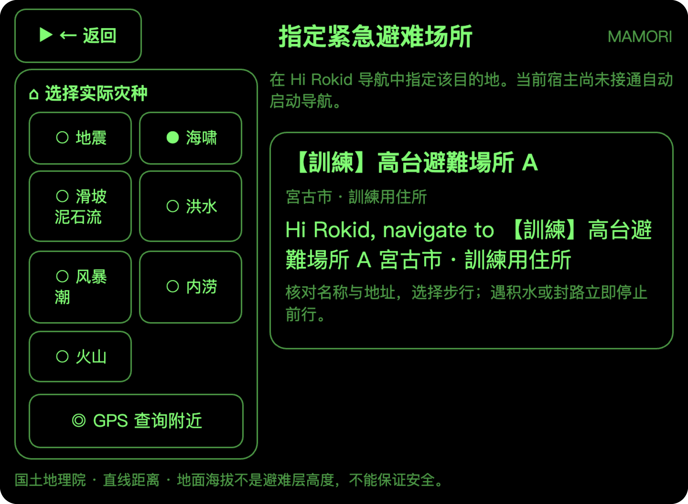

守
まもり MAMORIRokid Glasses 日本防灾智能体
以真实 Ink 界面展示 · 开发原型
平时看天气，
灾时知行动。
从所在地信息，到灾害应对指南，再到避难地点确认。まもり把关键信息与下一步，放进一屏。
结合所在地
先确认市町村，沿岸另行确认。
关键信息同屏
首要行动与三条要点集中呈现。
中日双语
七类指南随原生包保存在端内。
LOCATION
从你所在的地方，了解需要的信息。
通过 GPS、语音或地址、地区列表、日本邮编确认市町村。日常查看天气，也提前熟悉灾害应对方法。
GPS
确认当前位置候选
语音与地址
按地名或地址查找
地区列表
从都道府县逐级选择
日本邮编
确认对应市町村
HOME → ALERT
取得灾害信息时，
首页切换显示重点。
取得匹配所在地的信息后，天气数值切换为灾害名称。新的严重通报满足条件时，自动打开详情页。
日常首页天气与日常准备

灾害信息首页地震与海啸演练

天气数值 → 灾害名称保留所在地与指南入口进入通报详情
灾害首页为自动跳转前的暂停截图。当前采用前台约每分钟检查机制，并非秒级地震预警。
ACTION GUIDE
先做什么，一屏看清。
打开对应情境指南，首要行动与三条关键要点同屏展示，并支持中文与日文切换。

首要行动突出呈现
用短句说明当前应优先做什么。
三条要点同屏展示
无需手动翻页，就能查看关键要点。
基本指南保存在端内
信息难以取得时，也可查看基本行动。
地震海啸滑坡泥石流暴雨／洪水／风暴潮台风／暴风火山日常准备
SHELTER → NAVIGATION HANDOFF
按灾种查避难地，
再确认导航交接方式。
选择实际灾种，查询附近指定紧急避难场所。核对候选地点的名称、地址与直线距离后，查看如何在 Hi Rokid 导航中指定目的地。
查看避难地点候选

确认目的地与导航交接

地点、距离和海拔均为演练用虚构数据，不代表真实避难地点或安全路线。当前自动启动导航尚未接通，界面提供目的地信息与导航启动方式。
PRODUCT STATUS
已实现的功能，与下一步验证。
已实现的界面与功能
所在地确认／天气与灾害信息展示
中日双语行动指南
按灾种查询避难地／导航交接说明
仍需接通或验证
生产灾害信息服务与眼镜真机
后台通知可靠送达
秒级地震预警／自动启动导航